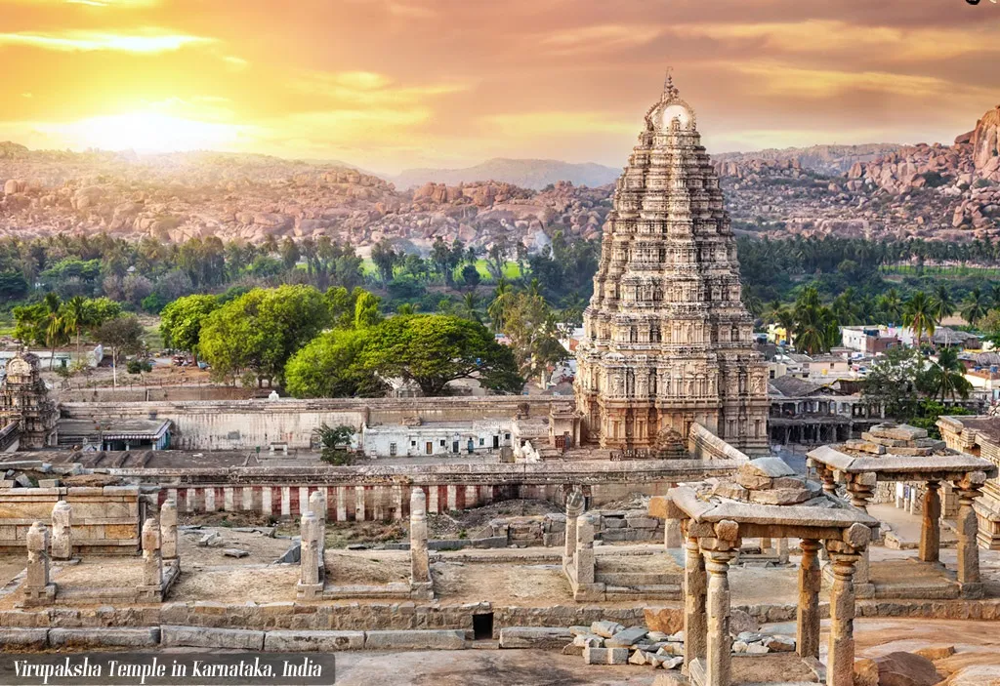
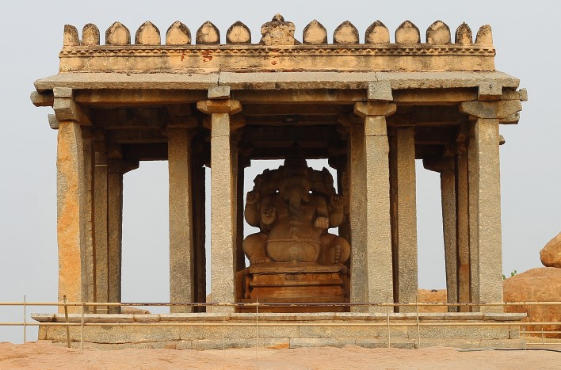
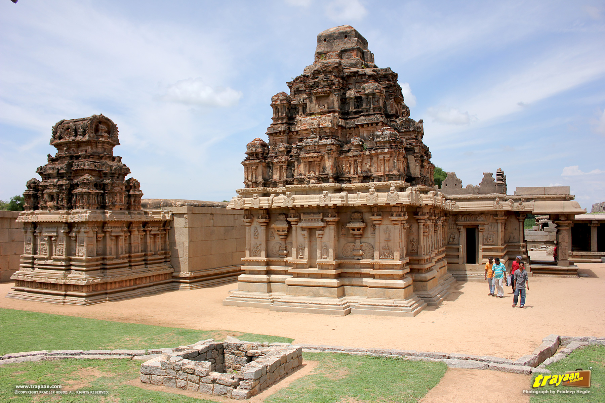

A UNESCO World Heritage Site located in east-central Karnataka, India. It became the centre of the Hindu Vijayanagara Empire capital in the 14th century.
Chronicles left by Persian and European travelers, particularly the Portuguese, state Hampi was a prosperous, wealthy and grand city near the Tungabhadra River, with numerous temples, farms and trading markets.
By 1500 CE, Hampi-Vijayanagara was the world's second-largest medieval-era city after Beijing, and probably India's richest at that time, attracting traders from Persia and Portugal.
The Vijayanagara Empire was defeated by a coalition of Muslim sultanates; its capital was conquered, pillaged and destroyed by sultanate armies in 1565, after which Hampi remained in ruins.
Hampi's ruins are spread over 4,100 hectares and it has been described by UNESCO as an "austere, grandiose site" of more than 1,600 surviving remains of the last great Hindu kingdom in South India that includes
"forts, riverside features, royal and sacred complexes, temples, shrines, pillared halls, mandapas, memorial structures, water structures and others Hampi predates the Vijayanagara Empire
Hampi continues to be an important religious centre, housing the Virupaksha Temple, an active Adi Shankara-linked monastery and various monuments belonging to the old city.
Some of the famous heritage sites of Hampi are:
VITTHALA TEMPLE
-
The Vitthala temple and market complex is over 3 kilometres (1.9 mi) north-east of the Virupaksha temple near the banks of the Tungabhadra River.
It is the most artistically sophisticated Hindu temple in Hampi, and is part of the sacred centre of Vijayanagara.
Most scholars date it to a period of construction in the early-to-mid-16th century.
The temple was dedicated to Vitthala, a form of Krishna also called Vithoba. The temple has three distinct compartments: a garbhagriha, an ardhamandapa and a mahamandapa (or sabha mandapa).
The Vitthala temple has a Garuda shrine in the form of a stone chariot in the courtyard; it is an often-pictured symbol of Hampi.

VIRUPAKSHA TEMPLE
-
The Virupaksha Temple is the main temple in Hampi. It was constructed in the 7th century is one of the most prominent sites in Hampi that is flocked by hundreds of tourists each year.
With towering gopurams and spectacular stone inscriptions, Virupaksha Temple, dedicated to Lord Shiva, is famous for its intricate South-Indian style architecture.
Virupaksha Temple celebrates three major festivals – Betrothal of Lord Shiva, “Phalapuja” festival which is the marriage of Lord Shiva with Pampa and Shivaratri.
 SASIVEKALU GANESHA
-
The Sasivekalu Ganesha is a temple dedicated to Lord Ganesha. The statue of Ganesha here is one of the biggest statues in Hampi.
Legend has it that the temple was built by a grain merchant as a thanksgiving gesture to Lord Ganesha. The statue in this temple is believed to be carved from a single block of stone and is about 2 1/2 m tall.
You have to trek a little bit to reach the place and its best to go in the morning to watch the sunrise.
 HAZARA RAMA TEMPLE
-
The standout feature of the Hazara Rama Temple is the wonderful carvings on the wall. Most of the carvings are rooted in Hindu culture and mythology. They also have carvings of religious festivals like Dussehra and Holi on the walls as well as scenes from Ramayana.
At this Dravidian temple, one can also see the strong influences of vimana architecture prevalent here.
